언제나 그렇듯 변하지 않기를 바라는 어리석음이 변하게 되는 것에 대한 후회와 절망으로 이끌게 하는구나. 생일에 대해 점점 안 좋은 기억이 쌓여가는 것 때문일까? 생일 축하에 대한 메시지가 공허하게만 느껴지는구나.
그럼에도 네가 행하기로 한 약속은 지켜야하지 않을까? 다만, 이번에는 조금 다르게 가보자구나.
작년에 너가 기부하기로 한 금액은 총 483,565원이란다. 그리고 이번에는 516,316원이로구나. 1년 동안 무얼 한 건지 모르겠구나. 너무나도 작은 금액... 여기에 매달 Save the Children에 기부하는 돈을 생각해보면 1년에 48만원이 되는구나. 그럼 남은 것은 3만원 가량... 너무 적구나.
이렇게 작년에 진행한 것을 계속 진행하는 것이 좋지 않을까 싶구나.

이렇게 한 아동을 1:1로 후원한다고 하니까 말이다.
그럼 이번에는 어떤 변화를 줄 것인가 하면 너가 지금 있는 곳에 기부를 하는 것이란다. 너는 지금 중국 베이징에 있지. 그리고 그 곳에 있는 회사에서 월급을 받고 있단다. 그렇다면 그 월급의 10%를 중국 구호단체에 기부를 하는 것이 좋지 않을까 싶다. 지금까지 받은 것은 한 번밖에 되지 않지만, 계약되어 있는 6개월동안의 월급을 생각해보도록 하자구나. 월급을 얼마나 받는지는 대외비인 것 같아 여기에 밝힐 수가 없지만, 얘기한대로 진행하자구나. 한 가지 힌트를 주자면 이번에 기부하기로 한 금액과 거의 비슷한 금액이 되더구나.
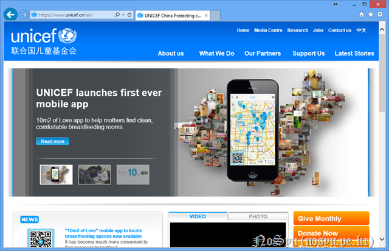
너가 선택한 곳은 unicef 중국이구나. unicef는 지금까지 계속 후원을 하던 곳이니 문제가 없을 것이라 생각한단다. 재미있게도 여기는 영문 페이지가 있어서 진행함에 무리는 없을 듯싶구나.

밑에 버튼들을 살펴보니 'Donate Now'가 있구나. 그래서 그 곳에 가보았단다. 가서 보니 두 가지가 있구나. 하나는 전체적인 사업 후원이고 두 번째는 올해 4월에 발생한 지진에 대한 후원이구나. 두 번째는 어느 정도 복구가 진행되지 않았나 싶기도 하고 첫 번째 것에 후원을 하면 만약 두 번째 사업에 필요하면 사용하지 않을까 싶구나.
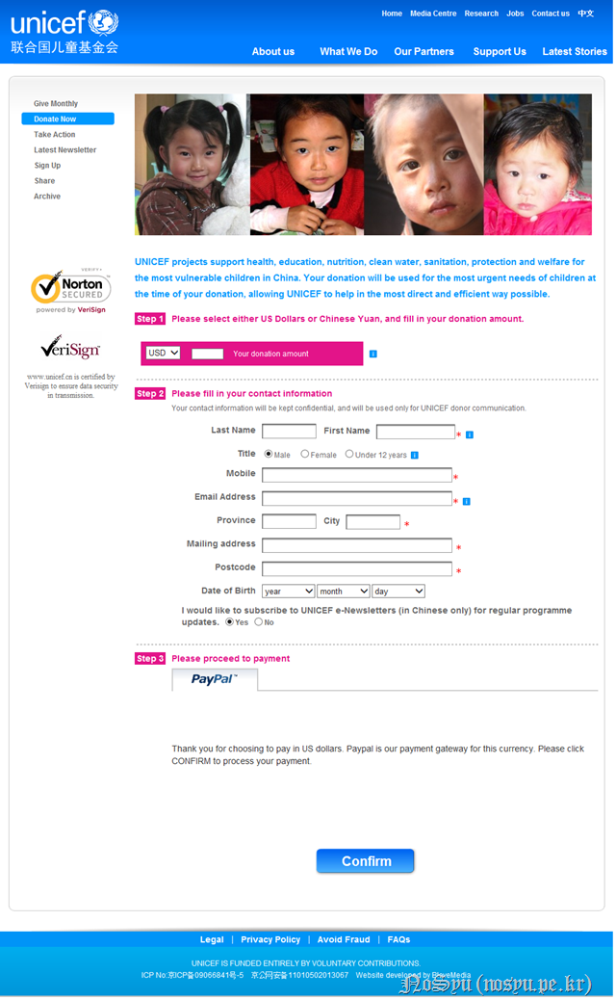
들어가보니 이렇게 기부창이 뜨는구나. 중국 위안으로 받은 월급을 다시 기부하려고 하는 것이니 RMB로 선택하여 기부하는게 좋지 않을까 싶다.
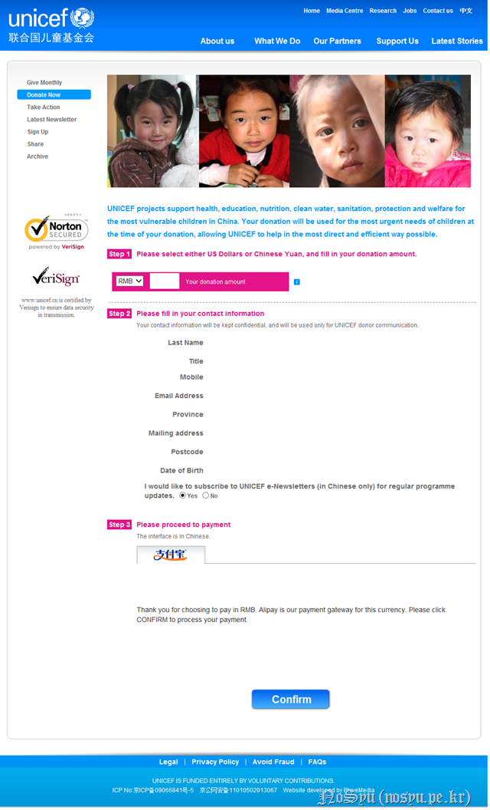
기부할 금액과 이름 등 정보를 입력하고 Confirm을 클릭하였단다. 아쉬운 것은 기부할 때 payment 진행은 중국어로 할 수 밖에 없다는구나.
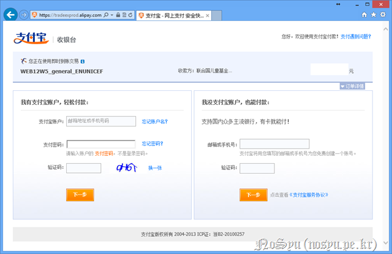
정말로 중국어로만 나오더구나.
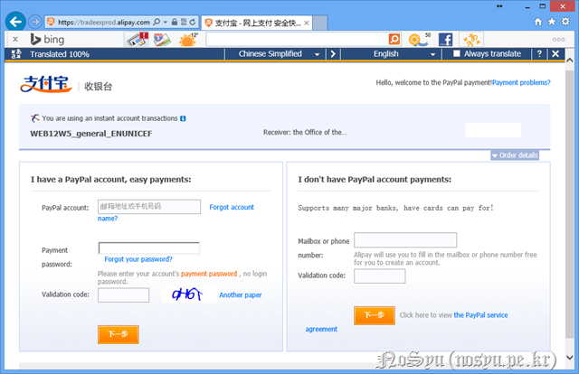
그래서 bing translator를 돌려보니 저렇게 나오더구나. 살펴보니 가입을 하는 것이 좋을 듯싶더구나. 그래서 alipay라는 곳에 먼저 가입을 하기로 했단다.
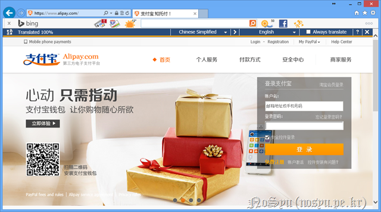
중국어로 나오는 것은 저렇게 영어로 바꿔가며 진행하였단다.
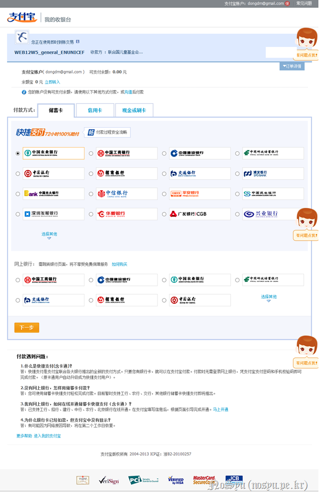
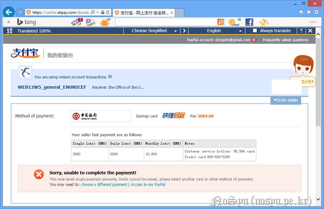
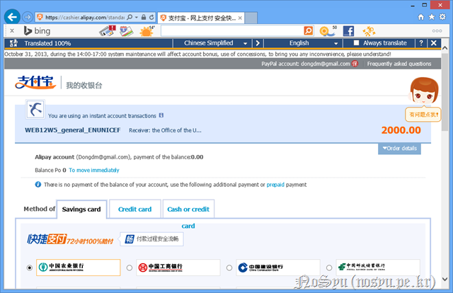
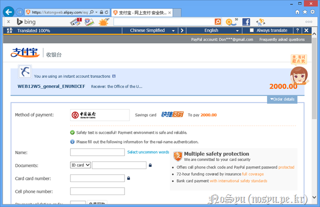
하지만 아무리 해봐도 안 되더구나. 처음에는 2천 위안이 한계라고 하여 2000위안을 놓고 했더니 이제는 Documents의 ID card가 무언지 모르겠더구나. 난 중국 신분증이 없는데 저것을 요구하니 난감하더구나.
그래서 Paypal을 이용하기로 했단다. 내가 기부를 하기로 한 돈을 달러로 바꿔보니 얼추 500달러라서 그 정도를 기부하기로 했단다.
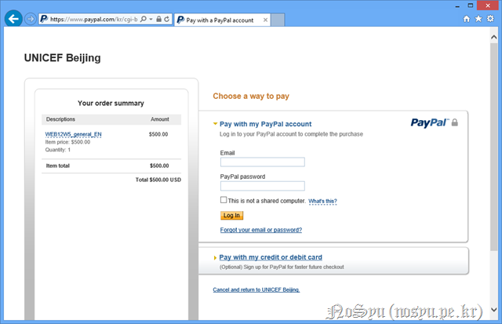
PayPal로 하니 저렇게 로그인을 하라고 하는구나. 그래도 영어라서 참 다행이더구나.
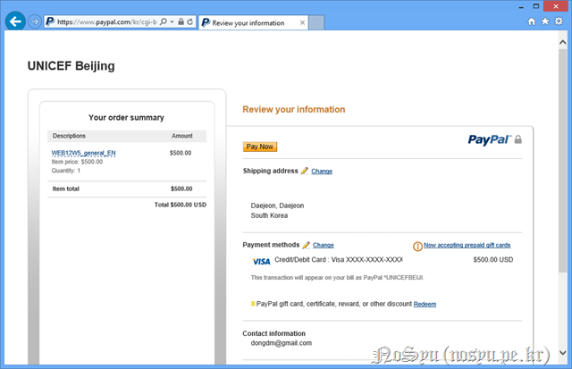
로그인을 하니 저렇게 나오는구나. 500달러를 결제한다고 하는구나.
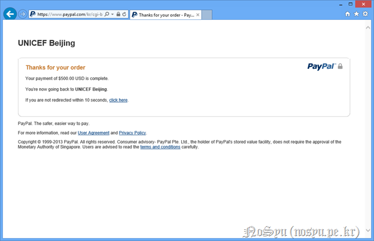
'Pay Now' 버튼을 클릭하니 저렇게 간단히 결제가 되더구나. 지금까지 무슨 고생을 하였나 싶네^^

그렇게 결제가 끝나고 나자 저러한 메시지가 뜨더구나.
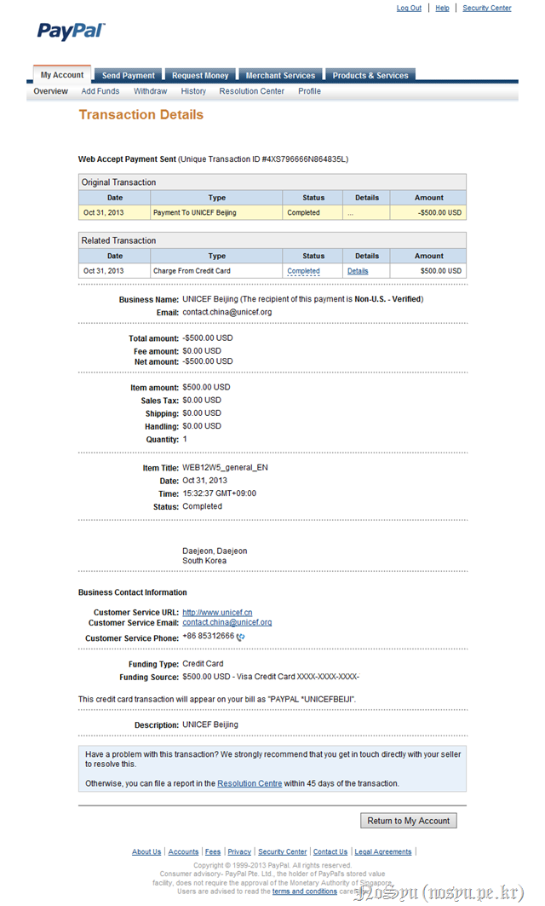
Paypal은 처음이라 제대로 결제가 되었는지 잘 모르겠구나. 하지만 살펴보니 저렇게 500달러가 결제가 되었다고 하는구나.
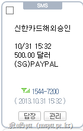
그리고 문자로도 저렇게 결제가 되었다는 메시지를 받았단다.
다시 한 번 생일을 축하한단다.
더하여 너가 이러한 글을 처음으로 적기 시작한 2007년 생일의 글을 보니 그 날은 34,500원을 기부하였더구나. 그 때는 왜 그렇게 초라해 보였는지 글을 적는 순간에서 화끈거렸던 기억이 나는구나.
6년이 지난 지금도 500달러라는 초라한 금액을 기부하는 모습을 남기게 되는 것에 대해 부끄러움이 먼저 오는구나. 언젠가는 더욱 큰 도움을 전달할 수 있는 그러한 사람이 되기를 그 때나 지금이나 바랄 뿐이란다.
지금 비록 많은 것에 슬프고 힘들더라도 언제나 조금씩 나아가는 그런 사람이 되는 너이길 바라며 이 글을 마무리 한단다.